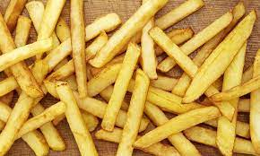

Patatas fritas
Receta de patatas fritas

Ingredientes
3 ó 4 patatas (300 gr.)
4 dientes de ajo
Aceite de oliva
Sal
Elaboración (Pasos)
Calentar aceite en una sartén
Añadir las patatas cortadas, la sal y los ajos
Freir al gusto
Servir en plato